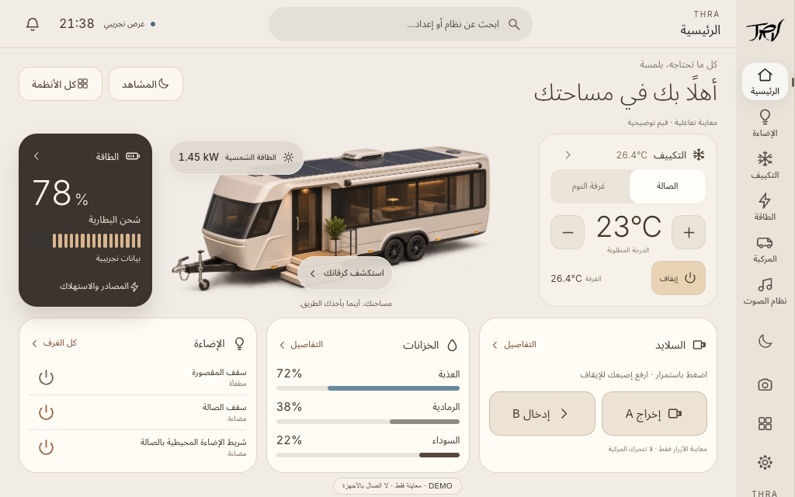
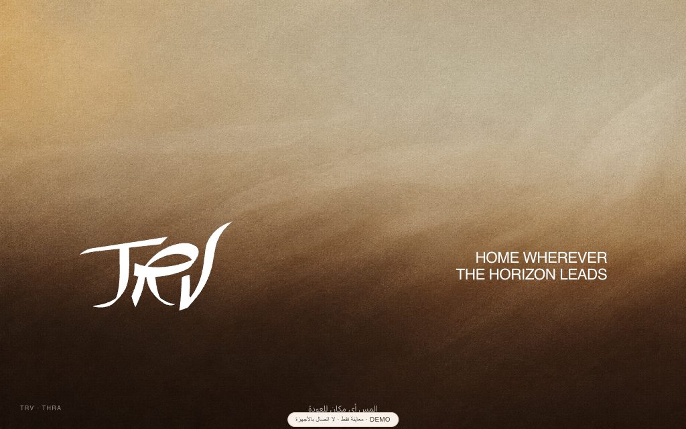
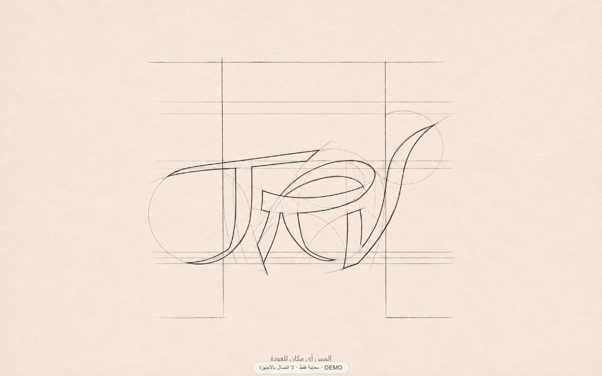
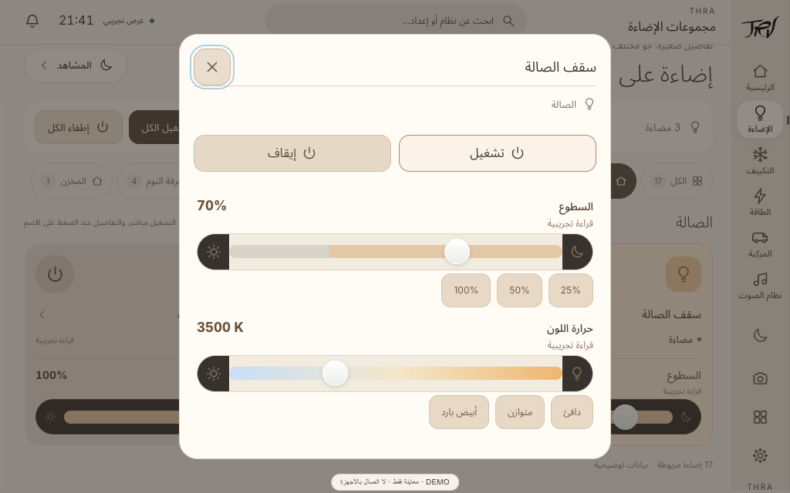

THRA / 02 · DESIGN PREVIEWمساحتك، أسهل وأجمل.
تصور تفاعلي لتطوير ثيم THRA بالكامل: ألوان رملية وكاكاو، خط خفيف، وأهم التحكمات أمامك من أول صفحة. الصور أدناه من التطبيق نفسه على مقاس 1024 × 640.
جرّب الثيم التفاعليالتكييفالدرجة المطلوبة مع + و− من الرئيسية؛ حرارة الغرفة منفصلة. التفاصيل للوضع والمروحة والمنطقة.السلايدA إخراج وB إدخال من الرئيسية؛ ضغط مستمر وإفلات للإيقاف في المعاينة.الخزاناتFresh وGrey وBlack معًا في الرئيسية، وتفاصيل كل خزان في صفحة المياه.الإضاءةتبويبات للغرف، تشغيل مباشر، وسحب السطوع عند دعمه. التفاصيل بنفس الهوية. 
هذه معاينة ببيانات توضيحية؛ الضغطات لا تتصل بمعداتك. التكييف غير المربوط وحساسات الخزانات تحتاج إعدادها الفعلي قبل تشغيلها أو عرض قراءاتها على الشاشة. اختبار حركة ريليه السلايد غير داخل هذه المعاينة.
كل صفحات الثيم
اضغط أي صورة لفتح صفحتها. الصفحات التفصيلية والإعدادات والنوافذ المنبثقة تبقى داخل THRA.
شاشة البداية والراحة


البداية البنية تظهر عند فتح المعاينة. زر الهلال يفتح شاشة الراحة البيضاء الثابتة؛ المس أي مكان أو اضغط مفتاحًا للعودة، من دون تمرير اللمسة إلى التحكمات خلفها. يمكن إعادة معاينة البداية من الإعدادات.
تفاصيل الإضاءة
